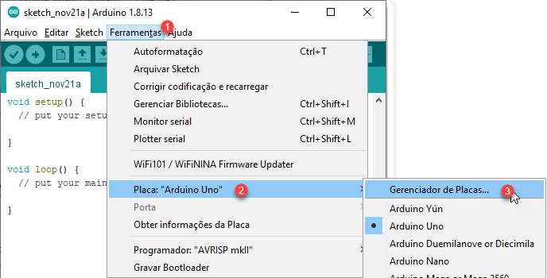

Programação da placa NodeMCU
Para realizar a programação e execução do projeto será necessário obter os seguintes softwares:
- Arduino IDE, disponível em: https://www.arduino.cc/en/software
- HackEduca Scratch 3.0 Mod, disponível em: https://hackeduca.github.io/
- Acesso ao ThingSpeak, em: https://ThingSpeak.com/login
- É necessário criar um cadastro no site. Caso não tenha o cadastro, clique em “Create One”.
- Drivers para comunicação entre o NodeMCU e o computador.
- Está disponível para as placas oficiais e similares nos seguintes links:
- Placa Oficial: https://www.silabs.com/developers/usb-to-uart-bridge-vcp-drivers
- Placa Similar: https://github.com/nodemcu/nodemcu-devkit/tree/master/Drivers
- Está disponível para as placas oficiais e similares nos seguintes links:
Agora veremos o passo-a-passo para instalar e programar a placa NodeMCU. No item 3.1 vamos verificar a instalação e no 3.2 como realizar a programação.
2.1. Instalação do Driver do NodeMCU
Existe duas opções de driver, para placas oficiais e similares. Neste projeto utilizamos a opção oficial que compõe a placa do projeto. Faça o download no link: https://www.silabs.com/developers/usb-to-uart-bridge-vcp-drivers
Na Figura 6 é possível verificar as opções de acordo com o sistema operacional. Figura 6. Opções de Driver do NodeMCU
Verifique o passo a passo para fazer a instalação:
- Faça o download e escolha o arquivo compatível (64bits ou 32bits)
-
Abra o arquivo .exe e execute a instalação, conforme demonstra a Figura 7: Figura 7. Instalação do NodeMCU
-
Após basta clicar em concluir.
- Faça download da IDE do Arduino no seguinte endereço: https://www.arduino.cc/en/software
-
Escolha a versão Windows ZIP, a qual não precisa de instalação, somente é necessário descompactar o arquivo, conforme demonstra a Figura 8. Figura 8. Descompactar a IDE do Arduino
-
Escolha um local para salvar o arquivo, conforme a Figura 9 Figura 9. Salvar a IDE do Arduino
-
Em seguida, basta descompactar o arquivo, conforme ilustra a Figura 10. Figura 10. Descompactar a pasta com a IDE do Arduino
-
Execute o arquivo arduino.exe. Caso queira manter 100% dos desenvolvimentos e bibliotecas dentro dessa pasta, crie uma pasta chamada “portable”, para que nada seja instalado fora desse local. Veja exemplo na Figura 11: Figura 11. Executar a IDE do Arduino
-
A instalação das bibliotecas ou library, as quais são conjuntos de função pré-escritas que facilitam o trabalho quando se cria um novo programa, não sendo necessário reescrever todo o código desde o início. Para isso, selecione a opção “Incluir Biblioteca” e, logo em seguida, “Gerenciar Bibliotecas” (Figura 12). Figura 12. Instalação da biblioteca
-
Na opção “Gerenciar Biblioteca” Instale o “DHT sensor library” e o “ThingSpeak”, conforme Figura 13: Figura 13. Instalação do “DHT sensor library” e do “ThingSpeak”,
-
Para instalar a placa NodeMCU ESP8266, de modo que ela fique disponível na IDE do Arduino, é necessário primeiramente habilitar o uso da placa NodeMCU com ESP8266, para isso, é preciso, indicar o endereço do repositório: https://arduino.esp8266.com/stable/package_esp8266com_index.json .
Siga os passos de 1 a 4 indicado na Figura 10. Figura 14. Como habilitar o uso da placa NodeMCU com ESP8266
-
Escolha a placa, conforme está demonstrado nas Figuras 15, 16, 17 e 18:  Figura 15. Selecionando a opção de gerenciamento de placas
Figura 16. Selecionar e instalar o ESP8266
 Figura 17. Selecionando NodeMCU
Figura 17. Selecionando NodeMCUPara selecionar a porta, verifique qual está disponível no seu dispositivo. Isso pode variar em cada dispositivo. No exemplo da Figura 18 a porta disponível selecionado foi a COM3, mas isso varia. Figura 18. Selecionando a porta disponível
-
Feche a janela após a instalação.
2.2. Programação da placa NodeMCU
Agora veremos como criar a conexão do sensor DHT 22, conectado ao pino D2 do NodeMCU, para enviar dados ao ThingSpeak (Figura 19). É possível fazer download do arquivo no link: https://drive.google.com/file/d/1BNsfWJ0jxjunhxm7o6kPmKUclMtLalzz/view?usp=sharing .
Para utilizá-lo basta fazer download. No Arduino clique em “Arquivo” e em “Abrir”, ao aparecer uma mensagem relatando a necessidade de criar uma pasta, basta clicar em Ok. O programa já estará aberto na sua IDE do Arduino.
Você pode pegar o código aqui também...
/** Este projeto faz parte da disciplina Fundamentos de Internet das Coisas - USP
* Elaine Silva Rocha Sobreira
* Prof. Dr. Antonio Deusany de Carvalho Jr.
*
* Possibilita a Conexão do Sensor DHT22, ligado ao Pino D2 (GPIO4), enviando dados
* para o ThingSpeak que são interpretados pelo Scratch 3.0, por meio da Extensão DataViewer
* (https://github.com/jaafreitas/scratch-dataviewer.
* Utilizamos o ScratchMod (modificação do Scratch), disponibilizado pelo HackEduca (https://www.hackeduca.com.br/).
*
* O ScratchMod pode ser acessado em https://hackeduca.github.io/
**/
// --------------------------- Declaração das Bibliotecas (library) --------------------------------------//
#include "DHT.h"
#include "ThingSpeak.h"
#include <ESP8266WiFi.h>
// -------------- Declaração dos dados de acesso (ssid, senhas, canal api -------------------------------//
#define ssid " " // Coloque o nome da sua rede Wifi
#define pass " " // Coloque a senha da sua rede Wifi
#define myChannelNumber XXXXX // Coloque o ID do seu Canal no ThingSpeak
#define myWriteAPIKey " " // Coloque a API do seu Canal no ThingSpeak
// --------------------------------- Declaração das Bibliotecas -----------------------------------------//
// Define o Sensor, o Pino e a inicialização
#define DHTTYPE DHT22
#define DHTPin D2
DHT dht(DHTPin, DHTTYPE);
// -------------- Define as variáveis para armazenamento de Umidade e Temperatura -----------------------//
// Define as variáveis para armazenamento de Umidade e Temperatura
float h; // Umidade
float t; // Temperatura
// ------------------------- Cria uma instância para acesso a Web ---------------------------------------//
WiFiClient client;
//*************//
void setup()
{
// ---------------------- Define o modo do Wif--> station mode ----------------------------------------//
WiFi.mode(WIFI_STA);
// ---------------------- Inicia processo para monitoramento serial -----------------------------------//
Serial.begin(115200);
// ----------------------------- Inicializa o sensor DHT22 --------------------------------------------//
dht.begin();
// ----------------------------- Acessa o site ThingSpeak --------------------------------------------//
ThingSpeak.begin(client);
}
//*************//
void loop()
{
// ----------------------------- Define quantos campos serão enviados ----------------------------------//
ThingSpeak.setField(1, h);
ThingSpeak.setField(2, t);
// -------------- Efetua a leitura de Temperatura e Umidade (guarda nas variáveis t e h) --------------//
t = dht.readTemperature();
h = dht.readHumidity();
// ----------------------------- Inicia o acesso a rede Wifi selecionada ------------------------------//
if (WiFi.status() != WL_CONNECTED) {
Serial.print("Tentando conectar a rede ");
while (WiFi.status() != WL_CONNECTED) {
WiFi.begin(ssid, pass);
Serial.print(".");
delay(5000);
}
Serial.println("\nConectado!!!");
Serial.println(ssid);
Serial.println(WiFi.localIP());
}
// ------------------------------ Envia dados ao ThingSpeak --------------------------------------------//
int x = ThingSpeak.writeFields(myChannelNumber, myWriteAPIKey);
if (x == 200)
{
Serial.println("Dados foram enviados com Sucesso.");
}
else {
Serial.println("Há algum problema no acesso ao Thingspeak: Erro #: " + String(x));
}
// --------------------- Mostra dados na tela de monitoramento Serial ----------------------------------//
Serial.print("Temperatura atual é : ");
Serial.println(t);
Serial.print("A umidade atual é : ");
Serial.println(h);
Serial.println("");
// ------------- Aguarda 20 segundos antes de enviar um novo dado para o ThingSpeak ---------------------//
delay(20000);
}
// --------------------------------------------- FIM ----------------------------------------------------//
Carregando no Arduino, essa será a imagem:
 Figura 19. Programação da placa NodeMCU
Figura 19. Programação da placa NodeMCU
Na programação temos comentários com as orientações necessárias para a declaração dos dados de acesso. No código compartilhado, conforme a figura 20 ilustra, nas linhas 1 e 2 é necessário incluir as informações necessárias para acessar a internet e, nas linhas 3 e 4, as informações para envio de dados para o ThingSpeak. Figura 20. Declaração das variáveis para acesso à internet e envio de dados
Antes do carregamento do código é necessário informar nos espaços indicados: * Nome da Rede Wifi * Senha da Rede Wifi * ID do Canal no ThingSpeak * Chave de Gravação do Canal do ThingSpeak
Para obter as duas últimas informações necessárias, siga os passos apresentados na próxima sessão: